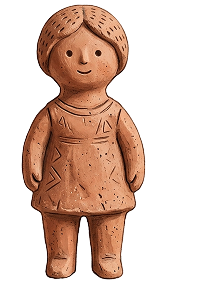
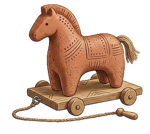
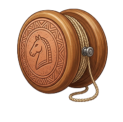
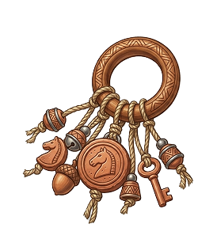

PERIODO ANTICO
DOVE TUTTO HA INIZIO
Immaginate un mondo senza plastica, senza batterie e senza schermi. Un mondo dove il divertimento nasceva dalla terra, dal legno e dalla pura immaginazione. Nelle culle della civiltà — tra le sponde del Nilo, i templi della Grecia e le strade affollate dell'Antica Roma — i bambini non erano poi così diversi da quelli di oggi: cercavano storie, sfide e piccoli compagni di avventura. In quest'epoca, il giocattolo non era solo un passatempo, ma un ponte tra l'infanzia e l'età adulta.
Molti degli oggetti che state per scoprire venivano realizzati a mano da artigiani specializzati o dagli stessi genitori, utilizzando ciò che la natura offriva: argilla plasmata dal fuoco, avorio prezioso o semplice legno intagliato.
Spesso, questi giochi avevano anche un significato sacro: accompagnavano i piccoli nelle cerimonie di passaggio o venivano offerti agli dei come simbolo di protezione. Esplorando questi reperti, scoprirete che il desiderio di giocare è un linguaggio universale che attraversa i millenni senza mai invecchiare.
Lo sapevi? Molti dei giochi che usiamo oggi, come lo yo-yo o le bambole snodabili, hanno oltre 2.500 anni di storia!



